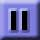

Base Component
View
a button with multiple states, such as a toggle button
base/multistatebutton.xml
A multistatebutton is an extension of the
basebutton class to address the more general
class of buttons that can have multiple states, and where each state
has it own mouseup, mouseover, and mousedown images. Like the
basebutton class, the construction of a
multistatebutton starts with a multiframe
resource.
The example below create a play/pause button, using the following
resources:

With a multistatebutton, the following must be specified explicitly:
- statenum
- the initial state of a button
- statelength
- the number of frames (of a multiframe resource) used for a single button state - NOTE: all states must be the same length
- maxstate
- the total number of states of the button - 1 (since states are counted starting from 0).
<library>
<!-- first create the multi-frame resource and give it a name -->
<resource name="mybutton_rsrc">
<!-- State: 0 -->
<!-- first frame of state 1 = mouseup image of the button -->
<frame src="images/multistatebutton/state0-mouseup.jpg"/>
<!-- second frame of state 1 = mouseover image of the button -->
<frame src="images/multistatebutton/state0-mouseover.jpg"/>
<!-- third frame of state 1 = mousedown image of the button -->
<frame src="images/multistatebutton/state0-mousedown.jpg"/>
<!-- State: 1 -->
<!-- first frame of state 2 = mouseup image of the button -->
<frame src="images/multistatebutton/state1-mouseup.jpg"/>
<!-- second frame of state 2 = mouseover image of the button -->
<frame src="images/multistatebutton/state1-mouseover.jpg"/>
<!-- third frame of state 2 = mousedown image of the button -->
<frame src="images/multistatebutton/state1-mousedown.jpg"/>
</resource>
</library>
<canvas height="60">
<include href="multistatebutton-resources.lzx"/>
<!-- Second, assign the resource to a basebutton tag -->
<multistatebutton name="myButton" resource="mybutton_rsrc"
statenum="0" statelength="3" maxstate="1"/>
</canvas>
Now, the multistatebutton will stay in state "0" until you switch
states. This can be accomplished by calling
myButton.setStateNum(number).
<canvas height="60">
<include href="multistatebutton-resources.lzx"/>
<multistatebutton name="myButton" resource="mybutton_rsrc"
statenum="0" statelength="3" maxstate="1"
onclick="this.toggle()">
<method name="toggle">
if (this.statenum == 0) this.setStateNum(1)
else this.setStateNum(0)
</method>
</multistatebutton>
</canvas>